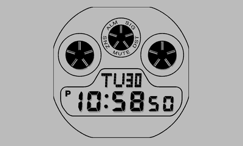

Every face of the LCD Watch plugin for TRMNL, by its name in the Watch Face setting. Fully digital watches only,
no analog-digital ones. Switch Weather on to see each watch with the plugin's Weather setting on: the weather in
the watch's own style.
3586 · Dot matrix, tide and sun (2026)3575 / 3578 · Dot matrix (2025)3559 · Surf, tide and moon (2023)3529 · Round, three eyes (2023)

3536 · Square, three eyes (2023)3495 · Solar square, six languages (2021)3506 · Dot matrix, sport square (2021)3459 · Modern square (2018)